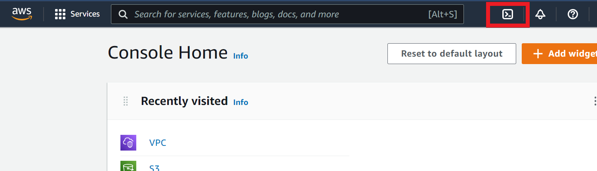

大手 3社のクラウドにて同じことをやっています。 宜しければご覧ください 👀✨
【Azure】CLI で Web サーバ(NGINX)を構築してみた
【Google Cloud】CLI で Web サーバ(NGINX)を構築してみた
目次
- クラウドに触ってみる
- やること
- インスタンス 構築手順
- NGINX による Web サーバ構築設定手順
- HTTP Status Code の確認方法
- AccessLog の確認方法
- インスタンス 削除手順
- まとめ
クラウドに触ってみる
世はまさに大クラウド時代なので、先月あたりからクラウドデビューしてみました！（遅いとか言わないで）
クラウドを勉強するにあたって、多くの方が使用しているサービスのほうが学んだことを活かせる機会が多いと考え、シェア率の高い AWS、Azure、Google Cloud の 3つをピックアップしました。
画面をポチポチして VM を立ててみたりして「わ～これは革命だ～」と一昔前の人のリアクションをしながら触っていたのですが、やはりポチポチだけではどうやらクラウドの良さをまだ引き出せていないようで。
CLI (Command Line Interface)で、コマンドだけで操作すれば画面ポチポチしなくても簡単にできる！複数同じ VM を立てたりする場合は圧倒的に CLI が便利！ なようです。
確かに画面ポチポチ（= Web UI ）は見た目が分かりやすいので初心者にはありがたいですが、毎度毎度入力するとなるとちょっとしんどいですよね。
何度か Web UI で操作して少し慣れてきたところで、クラウド3社それぞれで CLI での操作に挑戦してみました！
テーマは『3大クラウドの IaaS のサービスで VM を立てて、NGINX で Web サーバ構築してみる！』です。
その戦闘の記録と感想を、クラウド各社で分けて記載していきます。
今回は AWS です！頑張るぞ！
やること
- AWS EC2 上で Ubuntu の VM を立てる
- VM に NGINX をインストールし、Web サーバとして設定
- OS 起動時に NGINX が自動起動するように設定
- AccessLog が記録されていることを確認
- HTTP Status Code: 200 が返ることを確認
- VM を削除する
これを CLI でやるときの手順を以下に記載していきます。
インスタンス 構築手順
-
画面右上の「CloudShell」からターミナルを開く

-
SSH 接続に使用する key pair を設定
新規に key pair（public と private）を作成し、public key を aws に渡す（private key は自身で管理）$ aws ec2 create-key-pair --key-name [key pair name] --query "KeyMaterial" --output text > ~/[path]/[private key file].pem任意のフォルダに任意の名称の pem ファイルを作成し、そこに private key を出力
-
private key ファイルのアクセス権限を設定
$ chmod 400 ~/[path]/[private key file].pemこれで他のユーザがこのファイルを読み取れないようになる
このアクセス権限を設定しないと、この key pair を使用してインスタンスに接続できないため注意
-
セキュリティグループの作成
$ aws ec2 create-security-group --description "[任意の説明]" --group-name [group name]作成したセキュリティグループは
aws ec2 describe-security-groups --group-id [id]で確認できる
-
セキュリティグループに SSH 用のポート 22 と 80 を開ける設定を追加
$ aws ec2 authorize-security-group-ingress --group-id [security group id] --protocol tcp --port 22 --cidr 0.0.0.0/0 $ aws ec2 authorize-security-group-ingress --group-id [security group id] --protocol tcp --port 80 --cidr 0.0.0.0/0
-
インスタンスを新規作成する
$ aws ec2 run-instances --image-id [image id] --count 1 --instance-type t2.micro --key-name [key pair name] --security-group-ids [security group id]以下のコマンドでAMI（イメージ）を検索できる
$ aws ec2 describe-images --owners self amazon --filters "[条件]"今回は Ubuntu の AMI を使用したかったので、
--image-id ami-09d56f8956ab235b3(Ubuntu 22.04LTS) を指定
NGINX による Web サーバ構築設定手順
-
SSH でインスタンスに接続
$ ssh -i ~/[path]/[private key file].pem [instance user name]@[instance public dns name]今回は AMI に Ubuntu を使用しているので、デフォルトで
[instance user name] = ubuntuの値が設定されている （その他の AMI でのデフォルト user name も公式ドキュメントに記載）[instance public dns name]の情報はaws ec2 describe-instancesコマンドより取得できる
-
VM 内に nginx インストール
$ sudo apt-get update $ sudo apt-get install nginx
-
nginx 自動起動設定
$ sudo systemctl enable nginx.service
-
VM 再起動
$ sudo reboot
-
再起動で VM との接続が切れるので SSH 再接続
$ ssh -i ~/[path]/[private key file].pem [instance user name]@[instance public dns name]
-
nginx が自動起動していることを確認
$ systemctl status nginx.service→
Active: active (running)という文面が確認できればOK
HTTP Status Code の確認方法
- HTTP Status をリモートで確認（今回は自 PC の bash から確認した）
→ 値が返ってくるので以下が確認できればOK$ curl -v [外部IP]< HTTP/1.1 200 OK
AccessLog の確認方法
-
nginx の設定ファイルの中身を表示し、AccessLog ファイルの位置を調べる
$ cat /etc/nginx/nginx.confファイル内の以下の文面から確認
## # Logging Settings ## access_log /var/log/nginx/access.log;
-
AccessLog ファイルを確認
cat /var/log/nginx/access.logサーバにアクセスした履歴が残っていることを確認
インスタンス 削除手順
-
インスタンス削除
$ aws ec2 terminate-instances --instance-ids [instance id]ついでに今回作成した key pair とセキュリティグループの削除方法も以下に記載
-
key pair削除
$ aws ec2 delete-key-pair --key-name [key pair name] $ rm ~/[path]/[private key file].pem
-
セキュリティグループの削除
$ aws ec2 delete-security-group --group-id [security group id]
まとめ
クラウド CLI での Web サーバ構築第一弾として、AWS EC2 での手順をまとめました。
クラウド 3社を触った感想は１番最後の Google Cloud のまとめに一緒に書こうかなぁと思っています。
次回は Azure です！
こちらのブログは初心者エンジニアが勉強の記録やアウトプットの一環として執筆しております。
内容に誤りがある可能性が多大にありますのでご了承ください。